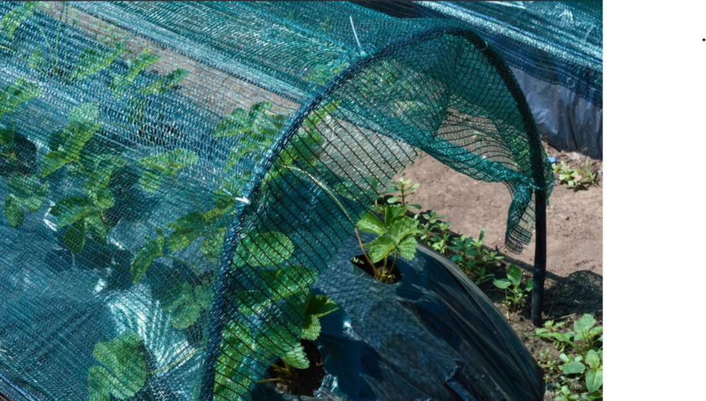
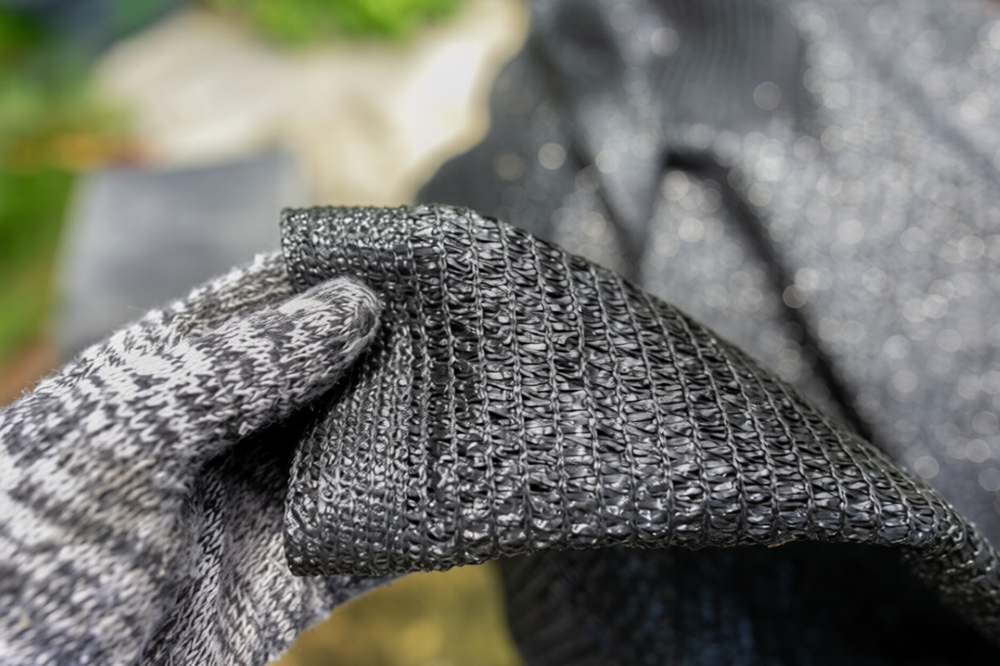
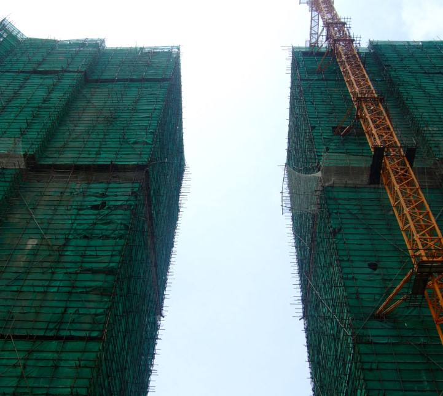
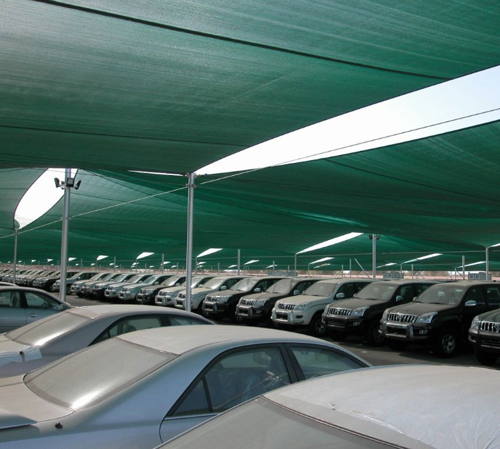
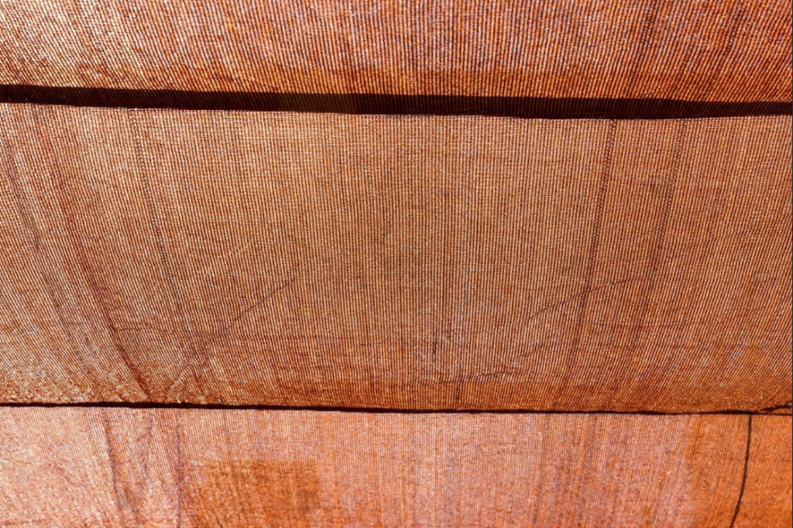
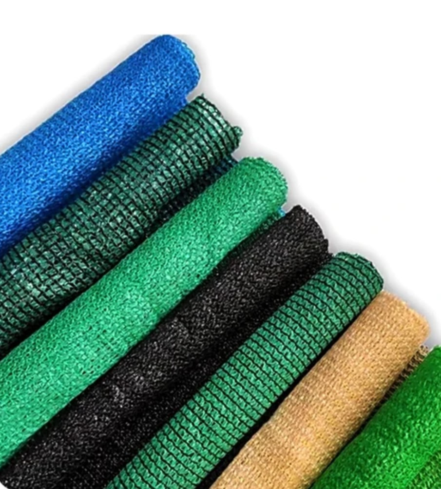

UV-stabilized HDPE shade nets engineered to control sunlight, temperature and
environmental exposure for agriculture and outdoor applications.






Product Overview
Agro Shade Nets are manufactured using 100% virgin HDPE and UV stabilizers
to ensure long-lasting outdoor performance. These nets regulate sunlight,
reduce heat stress and improve airflow, creating an optimal microclimate
for crops and plants.
Key Features
Controls sunlight intensity and temperature
Improves airflow while reducing heat stress
UV stabilized for long-term outdoor durability
Available in multiple shade factors and GSMs
Custom sizes and colours available on request
Specifications
Material: 100% Virgin HDPE (UV Stabilized)
Shade Factors: 50%, 75%, 90%
Weight: Approx. 40 GSM to 350 GSM
Widths: 1.5 m to 6 m
Roll Length: 50 meters
Colours: Green, Black, Beige, Silver
Lifespan: 3–5 years (normal outdoor use)
Applications & Use Cases
Agriculture and horticulture
Greenhouses and nurseries
Vegetable and fruit farming
Construction shading and dust control
Poultry, dairy and livestock farms
Parking areas and outdoor commercial spaces
Best Suited For
Growers requiring controlled sunlight for crop yield optimization
Nurseries and greenhouses managing temperature stress
Sites needing long-term outdoor shading with low maintenance
Selection Note
Shade percentage and GSM should be selected based on crop type,
regional climate, and installation height.
How do I choose the correct shade percentage for my crop?
Shade percentage depends on crop sensitivity, regional sunlight intensity, and season.
For example, vegetables often use 50–75% shade, while nurseries and orchids may require up to 90%.
What GSM should be selected for long-term outdoor installations?
Higher GSM nets (above 120 GSM) are recommended for permanent or semi-permanent structures
as they provide better strength and longer service life.
Is this agro shade net suitable for Indian weather conditions?
Yes. The net is UV stabilized and designed to withstand high sunlight exposure,
heat, and varying monsoon conditions common across India.
Can agro shade nets be used for non-agricultural purposes?
Yes. They are widely used for parking shades, construction sites, livestock sheds,
and dust control where sunlight and heat reduction is required.
What is the expected lifespan of the shade net?
Under normal outdoor use and correct installation, the shade net typically lasts
between 3 to 5 years depending on GSM and environmental exposure.
Does the shade net affect air circulation?
No. The knitted structure allows airflow while reducing direct sunlight,
helping maintain a balanced microclimate.
Are custom sizes and colours available for bulk orders?
Yes. Custom widths, lengths, GSMs, and colours can be supplied for bulk or project-based requirements.